| ただ川口浩探検隊に憧れて: たった２人で映画を撮る方法 | |
| 升田規裕 | |
| masudakikaku (2016) | |
二○一二年三月の初め、私はインターネットのライブカメラを毎日監視していた。
場所は神奈川県の水源、宮が瀬湖。湖の怪物、いわゆるＵＭＡの出現を待っていたわけではない。湖畔に広がる公園に雪が積もるのを待っていたのだ。
冬の時期、神奈川県の平野部は昔ほど雪が降らなくなっているが、平野部で雨が降ると、山間部の入り口である宮が瀬古周辺では雪になることが多い。ここに雪が積もったら自主映画の撮影を敢行する予定で、もう何週間もスタンバイしては、ぎりぎりで中止の決定を繰り返していた。皮肉にもロケハンをした日はいいい具合に雪があったものの、撮影の都合をつけた日には十分な雪がなくなっていたのだ。
今回は雪のシーンが多い。「チームウェンズデイ探検シリーズ 第三弾」の舞台設定がシベリアなのである。
そもそも「チームウェンズデイ探検シリーズ」とは、二○○九年に企画した、疑似ドキュメンタリービデオシリーズである。
探検隊は謎の遺跡や洞窟を探検・調査し、未確認生物を追い求める。ウェンズデイというチーム名からも分かる通り、一九八○年代を中心にテレビ放送された、｢水曜スペシャル｣という番組にオマージュを捧げつつ、勝手にその後継者を宣言してビデオ作品を作り続けよう、ということで始めた創作活動だ。
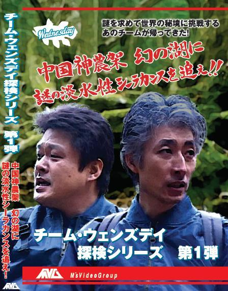
（チームウェンズデイ探検シリーズ第１弾の予告編はこちら）
実は私は、「水曜スペシャル ＴＨＥ ＭＯＶＩＥ 水晶髑髏伝説」という長編自主映画を、かなり本格的に凝って作ったことがある。一九九○年の事だ。
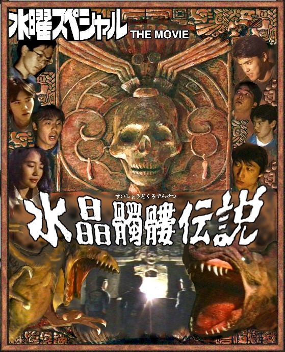
（ビデオパッケージ用写真）
「チームウェンズデイ探検シリーズ」はこの長編自主映画の設定のまま、探検隊のその後の活躍を描く、というコンセプトで撮り始めたものだった。
設定をそのまま、とは言っても撮影の規模は小さく変更した。新しい探検シリーズでは、長編では大人数であった探検隊から、二人組の探検チームに規模を縮小したのだ。もちろん探検隊の規模を縮小したのにはわけがあった。
「映画撮るんだけど、一緒にやらない？」
「おお、いいよ」
こんな気楽な調子で仲間を集められたのは、自分達が学生だったからだ。
二十年以上前の大学生時代に撮影した時の探検隊は総勢７名。それ以外にカメラマンなどのスタッフもいるから、撮影内容によってはかなりの人数になる。
当時学生だった我々は、金はないものの各自が自由に使える時間は十分にあったから、そんな人数の都合をつけて撮影することもできた。
しかし、四十歳も過ぎると、企画した本人は自分がやりたいわけだから時間を工面していくらでも都合をつけるが、なかなか協力メンバーを集めることができない。それぞれの仕事も大抵忙しいので、休日は休息も必要だし、家族との時間も確保しなければならない。
そんな条件で大人数を参加させようとすると、スケジュールの調整で困難を極める。全員の都合がつくのは数カ月に一度、その日が雨なら撮影は中止になって、短編映画を完成させるのに何年かかるか分かったものではない。
そこで離れ業として、探検メンバーを私と私の中学時代からの親友であるヨコタの２人だけに絞り、基本的にはカメラマン無し、というスタイルを基本に作品づくりをしよう、ということになったのだ。
実はこのシリーズは、はじめからこのような形にしようと思っていた訳ではない。
今では、ビデオカメラを自由に使って、パソコンでかなり思い通りに編集できる環境が当たり前になっているが、ふと、数年前、「こんな状況を夢見ていた頃があったなあ」と思い出したことがきっかけだ。
私が中学生、高校生のころは、まだビデオデッキがやっと普及し始めたところで、ビデオカメラは高価だった。もちろん、一般家庭には出回っていなかった。
「いつか、ビデオカメラを持ったら、こういうものを作りたい」というような話をよくしていた。それは怪談だったり、コメディーだったりしたが、当然の事ながら「川口浩探検シリーズ」の再現も考えていた。
高校生の頃、８ｍｍフィルムのカメラで探検物を撮影しようとしたことはあるが、完成には至らず、無残な結果に終わっていた。
大学生になって、いわばそのリベンジとして、今度はフィルムでなく８ｍｍビデオで前述の「水曜スペシャル ＴＨＥ ＭＯＶＩＥ 水晶髑髏伝説」を完成させたが、その完成には実に丸３年を費やすことになった。自主映画の制作は、想像をはるかに超えた労力が必要だった。
やがて社会人になり、ビデオカメラやビデオ編集ソフトをそれなりに使いこなして、小遣い稼ぎに舞台撮影・編集などをやるようになって、ふと、原点に戻って「ビデオカメラを持ったらやりたいと思っていた事」をやってみよう、という気になっていた。
それは、気軽にビデオカメラを使って、遊び半分に作品を作って楽しむ事だ。
そんな時、何かの記事かニュースで「伊豆高原でハリネズミが野生化している」というのを見たのだ。
ペットブームに乗じて、業者がおとなしくて飼いやすいハリネズミを大量に仕入れたものの、思いのほか売れ残ってしまって、こっそり捨てたのが伊豆高原だったらしい。
ニュース番組では、伊豆高原の別荘地で餌を置いてカメラを設置すると、夜中に、どこからともなくハリネズミがコロコロと集まってきている映像が流れていた。
私にはヨコタという、中学時代からの付き合いの相棒がいる。どちらが言い出したのかは忘れたが、「これを撮影しに行こう」ということになった。
普段、口の割に行動力がない２人にしては珍しく、トントン拍子に計画を立て、車中１泊の伊豆行きが決まった。
そこで、「どうせ行くなら、探検っぽくしよう」という事になったのだ。
調べてみると伊豆半島には観光用の洞窟もある。私の頭の中に「秘境・伊豆高原に白い魔獣バラミーガを追え！」というタイトルが唐突に浮かんだ。
何の根拠もなくネーミングしたバラミーガという名前だが、ヨコタは最後まで覚えなかった。
自主映画は学生時代から一貫して、私の趣味だ。普段、趣味として作っている自主映画は、ある意味では仕事以上にきっちりと考えて準備し、作っている。
そう言うと、仕事をいい加減にやっていると思われて困るのだが、一般的なサラリーマンの仕事というのは、こなすべき対象や環境を与えられて、自分の持つノウハウを使って処理していく。
極端に言うと、頭を使わずに流れに乗って、受け身の姿勢に徹しても大概は進んでいくものだ。（まあ、高い給料を取れるサラリーマンは、もっとレベルの高い仕事をしているのだろうが）
しかし、趣味とはいえ、自分以外の人も絡めつつ物を作ろうとすると、環境を作り、手法を考え、自分のアイデアと行動力を駆使しないと一歩も進まない。誰に頼まれもしない事を好きでやっているのだから、「大変だ」という言い方は適当ではないが、結構なエネルギーを使うことは間違いない。
このときに思ったのは、「まだ、映像作品づくりの手順を全く知らない頃の発想のまま、自由に行き当たりばったりで撮影してきた映像を編集したら、どの程度、形になるのか」ということだった。
もし、それがある程度形になるのであれば、かなり労力少なく、楽しんで映像制作ができるヒントがつかめるのではないだろうか。
私は、ほとんど行き当たりばったりの撮影を想定して、「昼の洞窟探検」と「夜の伊豆高原でハリネズミを探す」という映像を組合わせる予定で、ストーリーらしきものを作った。
冬のある土曜。朝早くにヨコタが運転するワンボックスカーで伊豆半島に向かい出発した。
ヨコタの第一声は「伊豆のどこにいくの？」だった。私は助手席で、事前に話したはずの、「目的地の説明」、「撮影のラフな計画」をもう一度話した。
私たちは神奈川県の西部に住んでいる。特に道が混んでいなければ伊豆まで行くのはさほど遠くない。
車中で歌こそ歌わないものの、遠足の気楽さで旅は順調に進んだ。季節は冬で、熱海、伊豆方面に行く車はさほど多くないようだった。湘南から小田原にかけての海岸道路からは、黒い海鳥のように波間に浮かぶサーファーがちらほら見えた。
伊豆半島への入り口である、熱海に着く頃には昼になっていた。私たちは駅前の駐車スペースに車を停め、食事ができる店を探した。
かつての有名観光地・熱海は、すっかり寂れているのかと思ったら、思いのほか活気があって、気持ちのいい街だった。元々、食にあまり興味がない二人なので、昼食はコンビニの弁当でもよかったのだが、
「せっかくだから地元のものを食うか」
「せっかくだからな」
ということで、観光用の食堂がたくさん入った建物に入った。
入って早々、呼び込みのおばちゃんが「海鮮丼いかがですか」と声を掛けてきた。元より食事は何でも良かったので、メニューまで一方的に決めてくれたのを幸いに、案内されるままその店に入った。
「お兄さんたち、来てくれてありがとね」
席に着いてからも、件のおばちゃんが声を掛けてきた。どの店も同じなのかも知れないが、感謝されると気分はいい。
「熱海に来たら、またこの店に入ろう、という気になるなあ」とヨコタが言った。
「確かに。商売は本来、こういう積み重ねなんだろうな」
多くの商売は、売るまでは親切だが金さえもらえば後はほったらかし、というのがほとんどだ。特に、色々なビジネスにおいて、新規客重視の風潮には非常に違和感を覚える。こういうちょっとしたことで、リピーター客になるか、次は制裁の意味を込めて別のところから買うか、分かれていくのだろうなあ、と思う。
海鮮丼は旨かった。
「刺し身って、旨いじゃん？」
「旨いね。生の食材ってのは、基本的に旨い」
私の倍のペースでご飯をかきこみながらヨコタが答える。
「でもさ、料理人としては不本意だよな」
「なんでよ？」
「うまい、って言っても、それは料理人の腕じゃなくて、素材の旨さなわけだよ」
「まあな」
「料理のし甲斐がないじゃん？」
あっという間に大盛りの丼を平らげたヨコタは
「楽でいいんじゃなね？客も満足だし」と答えた。
確かにそれが正解だろう。しかし、私が料理人だったら、きっと余計な工夫をして手間を掛けるだろうな、と思う。どちらかというと、まずい素材を、何とか食えるようにする、という方が、性に合っているのかも知れない、と思った。
昼食を終えると、「せっかくだから、お土産を買うか」という事はなく、熱海を後にした。このときコンビニで耳栓を買っておけばよかったと後悔するのは、夜になってからである。
伊豆半島に入り、地図を頼りに伊豆高原に向かい始めたころ、天候が怪しくなってきた。
そして、その日の目的地としていた、「伊豆高原駅前」に着く頃には、信じられない勢いの土砂振りの雨になった。
「なんだこの降りは！前が見えねえぞ！」
「ちょっと、危ないからそこに停めようぜ」
駅前のちょっとしたスペースに車を停めて様子を見ることにした。
「今、職質されたら、なんて答えれば自然なのかな？」
「違法なことはしてないぞ」
「お前、この間、撮影中にパトカーの警官に声を掛けられて、いきなり『いや、違うんですよ』って言ったろ？」
「あれはちょっと不自然だったな」
「どうみても怪しいよ」
ひとしきり、職務質問に対する自然な対応を検討する。結論としては、「小手先でごまかさず、堂々と応対する」という、人生指南のようなことに落ち着いた。
探索の標的であるハリネズミは夜行性で、伊豆高原の別荘地に夜な夜な出没するという。私たちが、別荘地である伊豆高原の夜の道を、カメラと懐中電灯を持って散策しようと思っていた目論見は完全に外れた。
散策どころか車から一歩も出られない豪雨で視界不良のため、運転もままならない状況になってしまったので、やむを得ずハリネズミ探索は早々にあきらめ、翌日に予定していた洞窟撮影に頭を切り替えた。
相変わらず土砂降りではあったが、なんとか伊豆半島の周回道路に戻り、広いパーキングエリアで車内泊することとした。
ヨコタの車は広いワゴンタイプなので、シートのレイアウトを変えると、大人二人は余裕で寝られる広さになる。買い込んでいた食糧で夕飯を済ませ、用意していた毛布で寒さも十分にしのげて快適に眠れるはずだった。
ところが、ヨコタのいびきの酷さは聞いていた以上だった。
私は元来、枕が替わろうが、表通りの車の騒音が聞こえようが、夜になれば眠ることに苦労する事は無い。そんなこともあって、「いびきが酷いぞ」と言われていても高をくくっていたのだが、当日耳栓を持っていかなかった私は、試しに色んなものを耳に詰めてみたものの、結局、一睡もできずに朝を迎えることとなった。
伊豆に来て感心したことの一つは、公衆トイレの整備状況だ。大体において公衆トイレというものは汚い。繁盛しているショッピングモールの中のようなところでさえ、満足に掃除されていないことが多いものだ。使う人のマナーだけを頼りに、「何とか使える」という状態を保っているところは多い。
ところが伊豆半島では無人のパーキングエリアにあるトイレでさえ、きれいに掃除されていて、トイレットペーパーもちゃんとある。蜘蛛が巣を張っているということもない。これはかつての観光名所としての誇りがそうさせるのだろうか。観光というものに対しての意識レベルが高い証拠だ。これはもっと評価されてもいい。客として利用している側としても、積極的にマナーを守って、整備に協力しようという気になる。
熱海の食堂といい、公衆トイレといい、老舗の観光地の底力を感じた。
夜が明けると、前日までの大雨は嘘のように上がり、目の前に広がる太平洋はすばらしい景色を見せていた。雲のすき間から差す太陽の光が幾筋もの柱になってオーロラのように変化する。私は、前夜、ハリネズミ探索の撮影が出来なかった反動もあり、夢中でその景色の撮影をした。
自然が作り出す、そのときだけの景色というものは、狙っても撮れるものではない。まさに偶然の産物なのだ。
その様子を数分間固定カメラで撮影した映像は、編集によって高速度再生させた状態に加工され、のちにＭＶＧの映像ストックとして活用することになる。
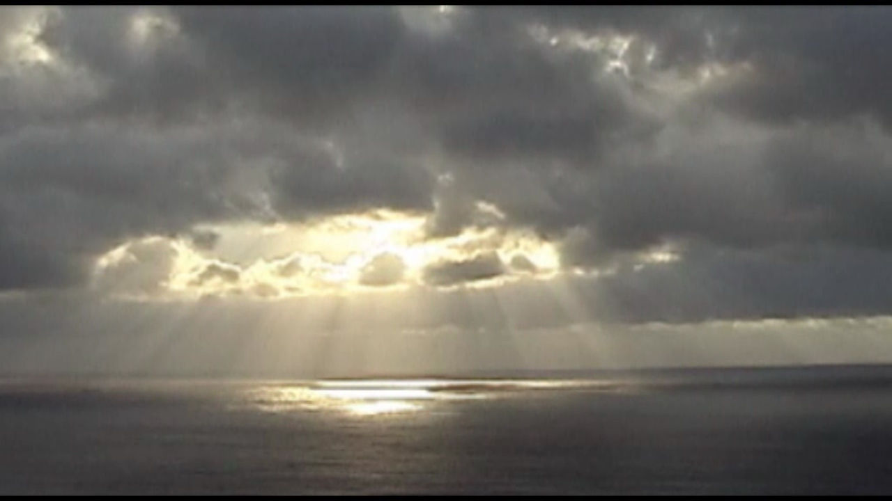
ガイドで見つけた小さな記事を頼りに、伊豆半島の南端を過ぎ、西伊豆に入る。「室岩洞」という洞窟を目指すのだ。
すでに初日の大雨で予定は崩れているのだが、私が頭の中で描いていたシナリオでは、この室岩洞の探検シーンがクライマックスとして使われるはずだった。
撮影としては、「伊豆高原のハリネズミ探索」の翌日、「大室山の探索」をして、大室山に口を開けている溶岩洞窟（立ち入り禁止）の外観を撮影した後、この室岩洞の探検に繋いで、謎の生物の痕跡発見、という流れにしようとしていたのである。
伊豆の海岸線の道路は一本道なので迷いようはない。信号も無く、助手席で太平洋をのんびり眺めながら、時々地図で現在位置を確認するという行程だ。当時はカーナビも無かったので、特に田舎道では助手席の地図係の役割がじゅうようだったのだ。
「今の看板がそうだったんじゃないか？」
運転していたヨコタの指摘で、地図を見落としていたことがわかった。
「次のパーキングでＵターンして」
「いや、Ｕターンの指示はいいから、地図をちゃんと見ててくれ」
引き返してみると、確かに道端に地味な看板が立っていた。地方の観光地に行くと、派手な看板のわりに見所本体はこじんまりしてることも多いが、逆にここまで案内が小さいと、見落として素通りしてしまうのではないか、と心配になる。現に、ここを目的地にしていた私が見落としているのだ。
半島の海岸線を削って作った周回道路の外側はもちろん海だ。何となく、周回道路から上に登った山の中に洞窟があることを想像していたが、実際には逆に、道路の横から海に面して長い下り道があって、その先に洞窟があるらしい。
洞窟への下り道は吹きさらしだが、幸い風も無く陽も出て暖かい。私は、ヨコタに前を歩かせ、後姿を撮影しながら進んだ。程なくして道は洞窟の入り口に突き当たった。
入り口の看板には、洞窟のいわれ、注意事項が書かれている。「コウモリの保護にご協力ください」とあるので、その姿を捉えられるかもしれない、という期待が膨らむ。
「入ってみようぜ」
「ちょっと待って、俺も撮って」
とりあえずカメラをヨコタに渡し、構図を指示してから、私だけ一旦、道を少し戻り、「洞窟に近づいてくる隊員」の映像を撮る。
「おお、いいね」
何がいいんだか分からないが、こういう調子で撮影する事になるんだろう。
洞窟の入り口付近は一年中、雨が当たらないので、乾いた砂が積もっていて、大きなアリ地獄の巣があった。
「その辺に、アリいないか？」
二人で周囲を探すが、もう冬なので、なかなかアリは見つからない。
ようやくヨコタが小さなクモを捕まえてきた。
「慎重にな？」
「手は映らない方がいいのか？」
私がアリ地獄の巣の一つをアップで捉えて、カメラを回す。
「あ！隣の巣に入っちゃった！」
お約束のようにミスを連発しながらも、そのアリ地獄に捕らえられた虫の映像を撮影する。
「おー。弱肉強食の世界だなあ」
かなりスケールは小さいが、探検ビデオで表現すべき「弱肉強食」という素材は確保できた。
洞窟内にはあちこちに蛍光灯が付いていて、手持ちのライトがなくても歩けるようになっている。これはあらかじめ調べた通りだ。無人だが、朝から夕方までは、自動的に照明が点くように設定されている。
観光用の照明設備が無い、天然洞窟は暗い。入って散策するだけなら懐中電灯が一つあればいいのだが、その様子をビデオで撮影すると、映るのは懐中電灯のランプ部分と、せいぜい、照らされた壁の一部だけだ。
洞窟探検の雰囲気の撮影をするためには、重い撮影用のバッテリーとライトのセットを持ち歩く必要がある。今回は身軽に撮影したかったので、それらの設備は持ってきていない。
「わー！びっくりした！」
撮影をしながら、思わず声を出してしまった。洞窟の入り口を入ってすぐのところに、等身大で作られたの誰かの石像が立っているのだ。反対の壁を見ながら進んだので、前を通るまで気づかなくて、かなりぎょっとする。絶対にそれを狙ってそこに設置したはずだ。
ちなみに私はカメラを覗いていたので極端に視野がせまかったせいもあり、まんまと驚かされた。
この洞窟には、なんとかという、比較的珍しい種類のコウモリが群棲していると書いてあった。
コウモリといえば、中学生のとき結成したばかりの「水曜スペシャル愛好会」で湘南海岸の江の島洞窟でコウモリをつかまえようとしたことがある。
農家の同級生からもらった鳥避けの網を洞窟の通路に張り、洞内で落ち葉などを燃やして煙をたてたが、肝心のコウモリは一匹もいなくて、自分たちが煙にいぶり出されたことを思い出す。もし、その姿をビデオに撮影していたら傑作だったろう。
のちに江の島の別の洞窟で、コウモリの姿を８ｍｍフィルムのカメラでとらえることには成功したものの、ついに捕獲には至らなかった。
思えば、その「水曜スペシャル愛好会」の副会長は今、カメラの前をおっかなびっくり進んでいる、恐がりのヨコタなのだ。
洞窟は一本道で奥まで進んでいるわけではなく、「田」の字を組み合わせたような、というか、平安京エイリアン状の通路が入り組んでいる。案内の看板によると、昔、石を切り出した石切場だったらしい。
比較的、地元に近い、鎌倉の山にも同じような石切り場跡の洞窟がいくつもあった。外にむき出しになったところから石を切り出した方が楽な気がするが、何か理由があるんだろうか。
律儀に「順路」と書かれた案内に従って洞窟を進むと、どこからともなく「キキキキキ」というような声が小さく聞こえてくる。
「聞こえた？」
「聞こえたけど、本物か？」
マンガやコントでよく聞くのと同じコウモリの声だ。
「スピーカーから雰囲気を出すために音を流してるんじゃないのか？」
「そういう紛らわしいことはやめて欲しいよな」
二人の話は、山の斜面を緑色に塗って「環境緑化」を標榜したりする政策批判に及んだが、コウモリの声は本物だった。
まるで、花畑に行って「トイレの芳香剤を撒くな！」と勘違いして文句を言うようなものだ。
考えてみたら、現に、「洞窟でコウモリをいじめないでね」という注意書きもあるのだから、雰囲気作りのテープを流す必要なんてないのだ。コウモリも棲みにくくなってしまう。
周りの人がみんな自分と同じように、インチキで面白い演出を考えていると思ったら大間違い、と反省した。
ともかくも、私は今まで生でコウモリの声を聞いたことがなかった。かすかに続く声の源を探して、例によっておっかなびっくり進むと、「別室への狭い入り口」というような形状の通路までやってきた。どうやら、この狭い入り口の向うに広がる空間から声が聞こえてくるらしい。
「カメラ代わろうか」
ヨコタがおもむろにカメラマンを買って出る。
要は、先頭を歩くのが嫌なのだ。
私はヨコタにカメラを渡し、狭い入り口をそっとくぐってから、気配を感じて振り向き、上方の壁を見上げた。間近にあんなにたくさんのコウモリを見たのは初めてだった。
スズメより小さいと思えるコウモリが、上方の壁の一角から続々と湧きだすように飛び立っているのだ。
コウモリというのは、素晴らしい飛行性能を持っていて、恐らく、空中での方向転換能力はスズメなどよりも上なのではないだろうか。これで、我々と同じ哺乳類だというのだから、何とも面白い生き物だ。
そして、コウモリが鳥と決定的に違う点は、羽ばたきの静かさだ。どういう理屈か知らないが、コウモリは鳥のように羽ばたきに音を立てない。多分、スズメが顔の横を飛んだらそれなりの風圧を感じるはずだ。私は子供の頃、慣れて手乗りになる小鳥をよく飼っていたので、想像がつく。
それが、コウモリは、まるで蝶のように風圧を感じさせずに飛び回るのだ。
その大群の映像を撮ろうと思い、入り口の外でびびっているにいるヨコタからカメラを受け取り、もう一度戻る。
しかし、今まで無数に飛び立っていたコウモリはもうほとんどいなかった。羽音などが無いだけに、全て幻覚だったのではないか、という気もしてくる。
しかし、コウモリが湧き立ってくるように見えた壁をライトで照らすと、確かに少しくぼんで、黒っぽいシミが付いている。どうやらコウモリの群れはここをねぐらにしていたらしい。
「怖えー！」
怖がるヨコタをなだめすかして先へ進む。
すると、かなり広い空間に出た。多数のコウモリが乱舞している。時期的にはまだ冬眠から覚めたばかりと思われるコウモリたちは、さぞ侵入者を迷惑がっていただろう。おとなしい性格でなかったら絶対に攻撃してくるところだ。
しかし、近くで見るとコウモリの飛行能力というのは改めて凄い。
昔からコウモリというのは、その思いきった不器用な飛び方が、夕暮れ時に無茶な走り方で遊びまわる子供のイメージと重なることから、「幼くして死んだ子供の生まれ変わり」いうような言われ方をしていたとも聞く。うちの近所の密教系の寺の中にも、よく見るとあちこちにコウモリの図柄がいくつか描かれている。
だが、一見、不器用に見えなくもないが、実際の飛行能力は大したものだ。顔のすぐ横を猛スピードですり抜けて飛びながら、鳥のようにバサバサと風圧を感じさせない。ライトの光が透ける羽をはばたかす様はアゲハチョウのようだが、燕のように素早い。
私が撮影しながら、そんな解説じみた感想をしゃべっているのに、隣のヨコタは笑顔で「怖えー！」を連発している。笑顔になっているということは、本当にびびっている証拠だ。
「俺、群れの真ん中に立つから、その姿を撮ってくれ」
私は乱舞する群れに包囲される隊員、というの映像が欲しくて、ヨコタにカメラを渡した。
「また無茶なことを！」
びびり過ぎてハイになったヨコタに撮影させながら、群れの中心に立った。映像で見ると良く分からないが、気分としては、「インディジョーンズ魔宮の伝説」だ。
このあと、一通り洞窟を撮影したり、かつて切り出した石を船に載せたといわれる切り立った崖などを撮影したりして、室岩洞を後にした。
伊豆での最終目的地は大倉山にしていた。バナナワニ園などで有名な、火山の噴火口跡地周辺の公園だ。
あらかじめガイドブックで調べたところでは、溶岩洞窟がいくつかあるはずだった。
洞窟は大きく分けて４種類あると思っていい。
この日入ったコウモリ穴のように、人が何らかの目的で掘ったもの。鎌倉の山に多く見られるのはこのタイプだ。太平洋戦争中に軍事施設として掘られた穴も多い。
自然にできた洞窟の一つは鍾乳洞だ。これは石灰分を多く含んだ地面の中が地下水によって溶かされ、洞窟になったもの。全長が数キロに及ぶような規模の洞窟も多い。
もう一つ、自然にできたものが溶岩洞窟だ。富士山周辺に点在する洞窟はすべてこれで、言うまでもなく富士山が噴火したときに流れた溶岩でできたものだ。
最後は、打ち付ける波などで岩がえぐられて出来る、海蝕洞窟だ。江の島の洞窟などは、この海蝕洞窟と、人口洞窟だ。
溶岩洞窟や鍾乳洞のそれぞれに入ってみると、いろいろな点で印象が違う。まず、洞窟というと、音や声にエコーがかかって、地の底まで音が響いていく、というイメージがあるが、これは鍾乳洞に多い。
実は、溶岩洞窟は、壁の表面がスポンジ状に細かく複雑な凸凹になっていたりして、逆に音を吸収してしまうところも多い。富士風穴の大ホールに立っていると、まさに無音で、洞窟の中にいるのではなく、夢の中で風のない夜の岩場にいるような錯覚をおぼえる。
それから、足場だが、鍾乳洞は観光用の通路がなければ、全く進むことができない。現在進行形で地下の川が洞窟を広げているのが一般的なので、足場の下を轟々と音を立てながら水が流れていたりするのだ。すでに水が枯れている場合でも、起伏が複雑で、とても歩けたものではないだろう。
一方、溶岩洞窟は、ドロドロに溶けた溶岩がゆっくり流れながらトンネル状に固まったものなので、床が概ね水平だ。前述の富士風穴などは、その平らな通路がだらだらと下っていて、表面は分厚い氷に覆われているのだがら、巨大な氷の滑り台のようになっている。
後に、靴の底にアイゼンを装着して入ったことがあるが、アイゼンが外れたら、と思うと結構、恐怖感がある。
この伊豆行きの最終目的地とした大倉山の溶岩洞窟は、大倉山の噴火のときにできたもので、お約束のように大蛇伝説がセットになっている。観光地の洞窟には大抵、大蛇か龍の伝説がある。
大蛇伝説といえば、私の母方の田舎、能登半島の小さな海辺の村にも大蛇伝説があった。伝説、というか直接の目撃談だ。
亡くなった祖母から聞いた話だが、里から少し離れた「中瀬の谷」と呼ばれるところがあって、その周辺で昔から大蛇の目撃談があったのだ。谷の中の池を泳ぐ姿を見たという、遠目の目撃情報だけでなく、生々しい話もあった。
村は基本的に漁村なので、漁に使う網を見慣れている。ある目撃談はこんな感じだ。
山歩きをしていると、向かい側の山の斜面に作られた段々畑の一角に、巻き網漁で使う網が積んであって、濡れてぎらぎら光っている。網は畳んでも布団くらいの大きさはある。
誰がそんなところに網を持ってきたのだろう、と見ていると、それが動き出す。網を畳んで積んであったと思ったのはトグロを巻いた大蛇だった。
山菜取りに行った人が目撃することが多かったようだが、それがきっかけでノイローゼのようになって、死んでしまったりすることもあったというから、物騒だ。地元ではそれを「蛇に影を呑まれた」という言い方をしていたらしい。
祖母の直接の知り合いも、谷で大蛇を見たと騒ぎになったそうだ。当時は興味半分にみんなが聞きたがったが、目撃した老人は、かたくなに詳しい話をしたがらなかったという。
今では動物園で間近に、数メートルのニシキヘビなどを見る機会もあるが、情報が少ない時代。山の中でそんなサイズの蛇に出くわしたら、確かに仰天してトラウマのようになってしまうだろう。
一度、「中瀬の谷」にも行ってみたいと思っているが、能登の大震災の震源近くなので、果たしてどういう状況になっているだろうか。
で、伊豆・大倉山だが、前日の豪雨が冗談のように大晴天で気温も高い。
「やっぱり伊豆はあったかいなあ。長嶋茂雄が自主トレしたのは、この暖かさが理由だろうね」
「海流のせいで気候が違うらしいよ」
「へえ！」
などと感心していたが、何のことはない、地元横浜も、この日は汗ばむほどの陽気だったと後で知った。
溶岩洞窟の一角は、広い原っぱみたいなところの中央にあった。二、三メートル陥没した底の部分に洞窟が口を開けていた。これは、溶岩洞窟の入り口の特徴の一つで、地下通路の一部で天井が崩れることによって、地表を陥没させ、空間が姿を現す。だから、大抵は陥没穴の両側に入り口があったりする。
溶岩洞窟の一角は、明確に「立入禁止」とは書いていないものの、低い柵で覆われ、柵の内側は木や草が生い茂っている。その中に入っていくのは難儀だが、ところどころの隙間から、洞窟の入り口が見える、という趣向になっているようだ。
まずは、カメラを手に周囲の景色を撮影していた。
「あ！へび踏んじゃった！」
茂みの向こうの洞窟を夢中で覗き込んでいた私は、足元を這う蛇のしっぽを踏んづけてしまった。
「おー蛇だ！」
ヨコタがデジカメを片手に走り寄る。
ヨコタは暗いところなどは苦手なのだが、生き物全般には強い。
二人のカメラマンに追いまわされながら、アオダイショウは近くの木の枝の上に逃げた。
私が子供のころ住んでいたところは、目の前に森があって、蛇も大して珍しいと思ってはいなかったが、こうしてビデオカメラを持っているときに出くわすのは初めてだ。綺麗なアオダイショウだった。
カメラを近づけていくと動きを止めたので、顔のドアップを撮れた。
日本本土にいる一般的な蛇のうち、容易に見分けが付くのは数種類だろう。毒蛇のマムシ。近年、改めて毒蛇として認知されることになったヤマカガシ、無毒のシマヘビ、それに最大種のアオダイショウだ。大きなものでは二メートルを超すが、もし日本各地の大蛇伝説が事実だとすると、正体はこのアオダショウだと思う。
卵が孵化する前の温度などの条件が重なれば、倍数体が生まれる可能性はある。倍数体の個体は大きさが倍になる、という訳ではないが、四、五メートルのアオダイショウがまれにいてもおかしくないはずだ。
情報過多の現代と違って、動物園やテレビで本物の大蛇を見たことがない時代であれば、山の中で出くわした四、五メートルの蛇は七、八メートルの印象だったことは想像に難くない。
そういえば、修学旅行で行った、どこかの寺の宝物館で「大蛇の頭」という骨格標本を見たことがある。ほかの誰も全く興味を示さなかったが、私は興奮して観察した。興奮しすぎてそれがどこだったのか、という記憶は全く残っていない。撮影したフィルム写真も光量不足で失敗していた。そのときの印象としては、明らかにアオダイショウより大きく、ちょうど３倍くらいの大きさだったと思うが、その標本の由来伝説にあるような十メートルもの蛇の大きさではなかった。
そんな大蛇のモデルにふさわしい、アオダイショウの顔のアップを撮影しながら
「噛み付いてこないよね？」とヨコタに尋ねた。
ヨコタは高校卒業後、動物関係の専門学校に行っていたくらいなので、基本的に動物に詳しい。私の問いに対する答えはシンプルだった。
「噛むよ」
動きを止めた蛇が飛びかかる準備をしているように思えて、蛇の撮影を終了した。
思いのほか、色々な映像を撮れたことに気を良くした私は、いよいよ最後の映像素材、「溶岩洞窟の入り口」を撮影する事にした。今回のメインである「ハリネズミ探索」をしていない以上、とりあえずのストーリーすら構築は出来ないのだが、充分に「探検映画風の映像」は作れそうに思えた。そのために、是非とも、溶岩洞窟に入っていくところを最後に撮影したい。
いよいよ洞窟に入ろうと、柵をまたぎ、入り口に近づこうとしたが、これが容易ではなかった。ヨコタと二人で、鋭いとげのあるバラ科の植物の藪をかき分けていくと、最後に二、三メートルの崖を降りて洞窟の入り口に辿り着くことになる。
崖の縁まで到達して、降りられそうな場所を探してウロウロしていると、離れたところから様子を見ていたヨコタが言った。
「やめとけ。今、お前が崖から落ちる姿が見えた」
ヨコタには恐らく霊感も予知能力もない。
だが、人一倍「霊感的妄想力」が強い。
崖から降りても怪我をすることはまずないとは思ったが、無理して降りたところで浅い溶岩洞窟の中に入れるだけだし、この場所からの映像だけでも充分、サマになりそうだったので、ここは相棒に従って引き返すことにした。
どうしても好奇心が勝ると無理をして行動することになる。せっかく遠出してやってきた場所ならなおさらだ。そこで万が一の事故を考えて思いとどまることは難しい。
実は私は思いとどまる判断は慎重なヨコタに任せて、それに従うことが多いのだ。
後から洞窟の入り口を撮影した映像をチェックしたら、当時話題の「スカイフィッシュ」が映っていた。正体は単なる羽虫なのだが、ビデオカメラの特性で、はばたきながら直進するムシが、細長い胴体にたくさんの羽を備えた生き物のように映されるのだ。テレビで実験映像は見ていたが、自分でも同じものが撮れると、面白いような拍子抜けのような感じがした。
まだ陽は高かったが、帰途につくことにした。思い付きで伊豆まで来た割には、結構充実した探検ごっこが出来たと思った。
ヨコタの運転する車が走り出すと、私は一気に睡魔に襲われた。前夜、一睡もできなかったのはヨコタのイビキが原因なのだから、助手席で眠っても文句はないだろう、などと思いながら私は眠った。
結果から言うと、この伊豆での撮影は作品としてうまくまとまらなかった。そもそも行き当たりばったりの撮影予定だった上、メインピースの一つであった、「ハリネズミ探索」の撮影をしなかったので、当然、まとまるわけが無い。いくらこれまでに自主映画を何本か作ってきたとはいえ、必要な映像が揃っていなければ、パズルは完成しない。
映像的にも、ハンディータイプのビデオカメラを手持ちで、しかも歩きながら撮影した映像は、たとえプロが撮影しても見られたものではない。少しでも、画面を安定させるために、「ワイコン」と呼ばれる広角レンズのアタッチメントを付けるのが一般的だ。この時の撮影では、ワイコンを付けていない。
とは言うものの、根が貧乏性。せっかく撮影した映像を眠らせたままボツにするのももったいないので、映像も悪く、山も無くオチも無いが、旅行ビデオの感覚で編集してみた映像がこれである。
「伝説の魔獣バラミーガを追え！！」
伊豆のビデオも、ナレーションをたっぷり入れて、無理やりそれらしい形にすることは出来ると思ったが、そのナレーションも、どうせなら本家「川口浩探検隊」の田中信夫風に、本格的なものを入れたい。あてはあった。
私は何年か前から副業として、地元の小劇団の公演撮影をしていたのだが、当時、その劇団に所属していた若い役者さんの声質が、調節すればちょうど田中信夫風になる、と確信していたのだ。
しかし、人に頼んでナレーションを入れるとなると、当然、それなりにきちんとしたものを作りたい。今回の映像は、画質も悪いし、撮影があまりにもラフすぎる。洞窟や森を歩く映像が「絵になる可能性がある」ことは確認できたことだし、ヨコタと相談して、ここは一つ、探検隊らしくユニフォームを着て、もう少し本格的（に見える）探検隊の撮影をやり直そう、ということになった。
探検隊ユニフォームに対する思い入れは小学生の頃からあったようだ。
ウルトラマンで有名な円谷プロが制作したテレビ番組に、「恐竜探検隊ボーンフリー」というのがあるが、私はその番組の熱狂的ファンだ。恐竜を「戦う相手」としてではなく、「保護すべき野性動物」として描き、密猟者の手から守りながらも、そんな思惑とは関係なく襲ってくる恐竜を麻酔で眠らせて保護地区へ運ぶ、という話だ。
子供には設定がわかりにくかったらしく、番組はマイナーなまま終了。後に恐竜を悪者にしたり、恐竜時代の描写は背景にとどめたりする別番組に流れを変えていくが、それらの別番組は、子供の私にとっても何とも幼稚で全くなじめなかった。
ボーンフリー隊の隊員たちは通信用のヘルメットをかぶり、青いユニフォームを着ている。恐らくこれが「探検隊のイメージ」として私に刷り込まれているのだと思う。後に川口浩探検隊に目覚めるわけだが、そのユニフォームも青地の上下であった。
私が探検ビデオを作り始めたルーツを話すためには、中学生２年生の頃まで遡らなければならない。
この頃、相棒のヨコタと同じクラスになる。
そこで、何をするという訳でなく「水曜スペシャル愛好会」を結成したのだ。一人一人に入会届を出させる凝り方だが、もちろん会費などないし、特に活動を計画しているわけではなかった。
だが、そのころクラスで作った学級新聞のようなものが、一気に愛好会の方向性を決めた。手元に残っている、当時のガリ版刷りを見ると、新聞のおもて面は他のメンバーが手分けして記事を書いている。新聞的な時事ネタはなくて、「サイクリングで行くカナダ旅行」とか、冗談なのか本気なのか分からない記事もある。私はといえば、うら面全部を占領して「江の島に謎の洞窟発見」のレポート記事を書いていた。
これは記事にするために行ったのか、たまたま直前に行ったのか憶えていないが、初めてこの洞窟に行ったことは覚えている。「江の島までの道を知ってる。洞窟までも行ったことがある」という同級生をまじえた数人達と、放課後、自転車で向かったのだ。
当時の行動範囲は驚くほど狭く、移動はもっぱら自転車だったが、その自転車で「海まで行ける」という当たり前のことが、ちょっと不思議に感じた。
近所に流れる境川という、横浜市と藤沢市の文字通り境を流れる川に沿って南下すると、川は「片瀬川」と名前を変えて、江の島の目の前で海へと注ぐ。ちょうど小田急線の片瀬江ノ島の前だ。
私たちは自転車で橋を渡って適当に駐輪すると、同級生の案内に従って岩場に出て洞窟を目指した。
江の島の岩場には「海蝕洞窟」というタイプの洞窟が３つある。このうち２つは、現在、観光用に入れる第１洞窟と第２洞窟だ。３つ目は今もなお波によって削られ続けているので、入ることが出来ない。
このときに行ったのは、これらの海蝕洞窟では無くて、岩場に人工的に掘られた洞窟だ。江の島の「裏磯」と呼ばれる西側の崖には、こういう洞窟がいくつも口を開けている。地元の漁師の道具が置かれた物置がわりになっていたり、崖をトンネル上に貫通させることで、潮が満ちて通れなくなる海岸の上の通路として使ったりしていたようだ。
洞窟に行くというのに誰も懐中電灯も持たず、「木の枝を拾って、松明を作ればいいだろう」などという発想で行った、初めての洞窟探検である。
これは楽しかった。単に穴の中に入るだけなのに、得体の知れぬ恐怖感ともっと先を見たいという好奇心。これは理屈ではなく、本能に直接働きかける、原初的な魅力を感じた。
学級新聞では、川口浩探検隊ばりの大袈裟な文章でレポートを書いたつもりだが、元来作文が苦手で長い文章が書けないと思っていた自分が、すらすらと探検レポートを書いている状況にまず驚いた。
どれくらい作文が苦手かと言うと、小学校の授業で作文の時間になると、はじめに「僕は」と書き始めた後、その先が全く書けずに時間が終わるということも珍しくなかったくらいだ。「最低でも原稿用紙半分以上書くこと」と言われると、何とか頑張って半分と少しまで書く、という具合だったから、文章を書くのは苦手だと思っていた。
今にして思えば、こうして雑文を書けるのも、あの学級新聞がきっかけ、というか探検ごっこのお陰だったのかも知れない。
ともかく、比較的地元である、江の島の洞窟探検という遊びを見つけると、当時すでに研究を始めていた「川口浩探検隊」と同じユニフォームを作って洞窟に入りたい、と思うようになっていた。
だが、もちろんオーダーメイドで注文して作ろうというような発想もお金もない。スーパーで売っていた染色材で白いワイシャツを青く染めて、手描きのロゴを縫いつけようということになった。
まずは背中の「水曜スペシャル」のロゴのコピーだ。
今ならビデオの映像をパソコンに取り込んで、画像を書き出してトレースすれば済むのだが、まず、当時はパソコンどころかビデオデッキも普及する前である。まず、テレビ画面を写真に撮るところから始める必要があった。
水曜日の夜７時半に、テレビの前に三脚を立てて、番組冒頭の「水曜スペシャル」という画面を写真に撮る。ブラウン管をカメラで撮るのはなかなかうまく行かなくて、試行錯誤が必要だった。雑誌か何かの情報で、「シャッタースピードを１／30 程度まで遅くすれば比較的きれいに撮れる」と知って喜んで実行したが、今と違ってカメラはフィルムである。撮影してフィルムを使いきり、現像に出して上がってくるのを待って、初めて結果がわかる。お金だけでなく時間もかかったのだ。
現像してみると、失敗している写真も多かったが、比較的うまく撮れているものもあった。その写真に定規をあてて、「水曜スペシャル」のロゴを細かく計測し、一定の値を掛け合わせて拡大したものを方眼紙に書き写す。そしてその方眼紙を型紙にして、今度は青い布にロゴの輪郭を写し、白い塗料を使って白抜き文字を塗った。これを五人分作るのである。
今にして思うと、こんな原始的なことをよくやったものだと思うが、同時に、こういう「念」のようなものが周りに伝わって、仲間も協力してくれていたのではないか、とも思う。
隊員は水曜スペシャル愛好会のメンバーから選抜した（というか洞窟探検に乗ってきた）数人だった。ロゴを付ける長袖のワイシャツは各自から徴収した。
中学校の制服として白いワイシャツはみんな持っていたので、比較的古くなったものを提供してもらったのである。これを前述の染色剤で青く染めようという計画だ。
染色剤は水に溶かして衣類を漬けて染めるタイプのもので、水よりはお湯の方が染まりやすいと書いてあった。あらかじめ実験として一着分を事前に染めていたので、ワイシャツがかなり染まりにくいということは分かっていた。大抵のワイシャツは綿とポリエステルが混ざっていたのだが、このポリエステルが染まってくれないようだった。
本番の染色作業では鍋で煮ながら染める方法を取った。鍋が二度と使えなくなる大技だったが、躊躇は無かった。（後で母親にさんざん小言を言われたが）
それでもシャツの染まりは思わしくなかった。水洗いすると見る間に色は抜けていき、乾かすとさらに色は薄くなるようだ。本物のユニフォームのような深い青にはならず、せいぜい水色だった。予定通り真っ青に染まったのはシャツのボタンと、自分の爪だけだ。
結局、多少チグハグながら五着のユニフォームを完成させた。ただ、ユニフォームを用意したからといって、これといって新しい活動をした訳ではない。相変わらず行き先は江の島の洞窟で、探検をしている風の写真を撮って喜んでいる程度であった。
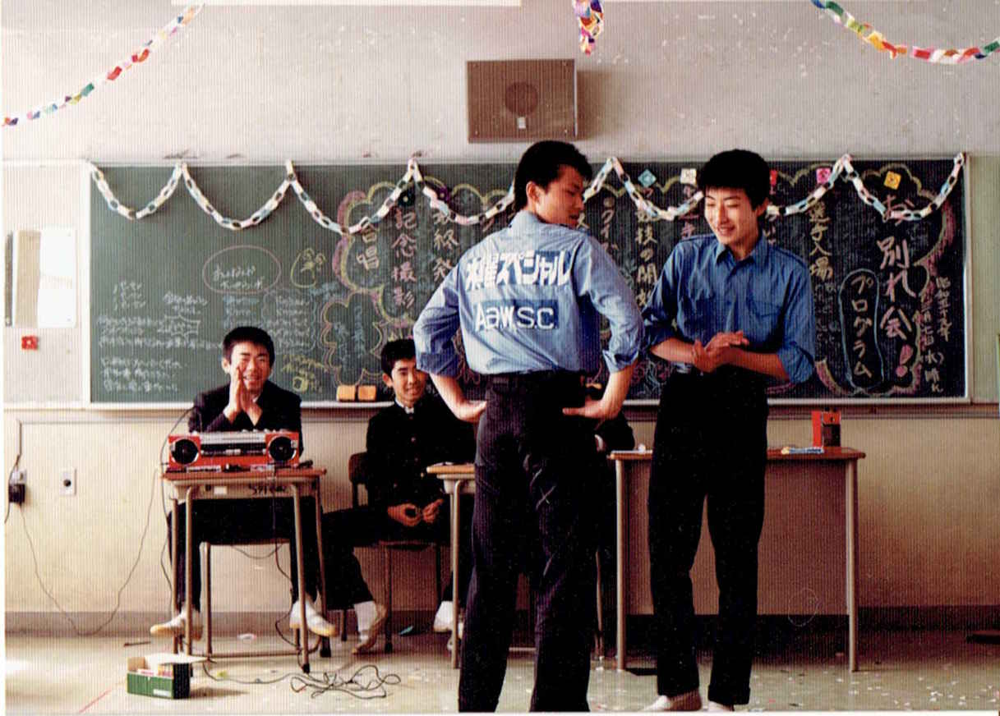
やがて高校に入ると、再びこのユニフォームを活用することになる。私の手作りユニフォームの存在を知った級友の発案で、８ｍｍ映画を作ろうということになったのだ。文化祭の出し物である。
タイトルは「水曜スペシャル カリマンタン奥地に謎の黄金怪蛇を追え！」というオーソドックスなパロディーである。
一応、映画に詳しい別の級友に協力してもらい、シナリオらしきものを書き、高いフィルムを買ってきて撮影をした。フィルムは１本約３分間の撮影しかできないが、フィルム代と現像代で２０００円程も掛かる。収入源の無い高校生にはかなり高い遊びだ。
相変わらず、メインのロケ地は江の島洞窟だったが、結果から言うと、映画は文化祭でには間に合わず、時間切れで何とも中途半端な状態でおわった。だが、青い揃いのユニフォームを着た自分たちの映像を見て、自分なりに感動してはいた。
そこから数年が経ち、一浪して大学に入った私は、早々にビデオ映画制作の準備を始めた。これが前述のの「水曜スペシャル ＴＨＥ ＭＯＶＩＥ」であるが、この作品は完成までに３年間も費やしたので、また別の機会に書きたいと思う。
30 代後半になっても、中学時代の相棒であったヨコタは私の遊びに付き合ってくれていて、映像作りの原点回帰として伊豆探検を経て、「チームウェンズデイ探検シリーズ」を作ることになった。
チームウェンズデイには、実は20
年以上前に作った設定がある。
ＭＶＧ第一弾として制作した「水曜スペシャル ＴＨＥ ＭＯＶＩＥ 水晶髑髏伝説」のために作った設定だ。
まず、「国際探検協会」という団体がある。鉱物資源調査、海洋調査、動物の生態調査など様々な専門分野ごとにチームが分かれていて、たとえば国や企業から調査の依頼を受けると担当チームが派遣される、という仕組みだ。
協会の日本支部には７つのチームがあってそれぞれに曜日のコードネームが付いている。主人公の川口率いる「チームウェンズデイ」は一般探検部門での活躍がめざましく、そのメンバーは「水曜スペシャル」と呼ばれていた、という設定だ。
要は、ユニフォームの背中にある「水曜スペシャル」のロゴに妥当性を持たせるために作った設定だが、その続編になる「チームウェンズデイ探検シリーズ」ももちろん、この設定を踏襲することにした。
「チームウェンズデイ探検シリーズ」の第一弾は「淡水シーラカンス編」というやつで、舞台は中国だった。もちろん舞台と言っても、それは設定上のことで、実際の撮影舞台となったのは、富士山の麓に広がる青木が原樹海だ。以前から、樹海の中の風景を撮影したかったためだ。
樹海は富士山が噴火した際、大量に流れ出た溶岩の大地に薄く木が生えた森だ。そのため一見するとただの雑木林だが、土というものが極端に少なく、黒い溶岩の上に苔が這い、場所によっては、ちょっと「もののけ姫」の森を思わせる感じがする。
「随分、倒木が多いなあ」
森に入ったときの印象である。倒木にはコケが生えていて、いい感じになっているのだが、明らかに普通の森より、倒木が多い。
あとで分かった事だが、大抵の場合、この森の木はある程度成長すると自重に耐え切れず倒れてしまう。何故かと言うと、地面に土がなく、固い溶岩に遮られて、木の根が地中まで伸びることができないからだ。すると自然と同じようなサイズの木の幹が多くなり、目印の付けにくい、迷いやすい森になる。
「あれ？車はどっちだっけ？」
「今、こっちから来ただろ？」
「いや、あっちからだろ？」
実際に撮影してみて分かったのだが、すべての方向の景色が似通っていて、撮影しながらグルグルと周囲を歩き回っていると、確かに方向感覚が無くなる感は多少あった。
ただ、そもそも、「目的地に向かう」という動機ではなく、「映像的に面白そうな場所を探してウロウロする」という行動なので、本当に迷ってしまうかどうかは分からない。
そもそも樹海で撮影する動機のひとつは、黒い岩と緑の苔の対比が美しいと思ったからである。
「思ったより綺麗じゃないなあ」
というのが第一印象である。
「お前が見た、黒い溶岩の上の緑のコケっていうのは、手入れされた庭だったんじゃないの？」
ヨコタにそう指摘されると、そんな気もしてくる。確かに、印象に残っている樹海の印象は、観光用の洞窟の横に見える一帯で、歩道もよく整備されていた。今にして思えば苔がきれいに見えるように落ち葉の掃除をした状態だったに違いない。
目の前の手付かずの樹海の中は、溶岩や苔の上に、タップリと落ち葉が積もっていて、樹海のイメージの「黒と緑の景色」ではなかった。
それでも、場所によっては苔むしていたり、溶岩がむき出しになって迫力があったりするので、そんな場所を拾うようにして撮影して回っていたのだった。
ただ、見かけは「腐養土のある、のほほんとした雑木林」だが、実際は先にも書いたように土というものが無く、樹海特有の足場の悪さに辟易する。ありていに言って危ない。
これは単に転びそうで危ないという意味だけではない。
例えば河原や海辺で石がゴロゴロしていて歩きにくいところを想像して欲しい。足を乗せた石が動いてバランスを崩し、踏ん張ろうとしてさらに出した足の下の石も動いてしまい、転んでしまう。これも、転ぶという意味では危ないが、シリモチをつく程度の転び方であれば、せいぜい打ち身やすり傷といった怪我で済む。
樹海の危なさは全然違う。
基本的に樹海の溶岩の上はやたらとゴツゴツしていて歩きにくいが、ゴロゴロはしていない。地面が溶岩の一体成型なのだ。
そして表面には無数に凹凸が存在する。自転車や車のワダチくらいのサイズの亀裂もたくさんある。場合によっては、その溝は、すっぽりと靴が嵌まってしまうサイズだったりする。表面には落ち葉が積もっているから、穴の存在は見えない。
はじめのうちは、その地形を面白がっていたが、すぐに、この危険に気がついた。
仮に、その穴に靴が足首まで深く嵌まり、バランスを崩してシリモチをつくとどうなるか。体は転んでも足首は岩の間にがっちりと固定されたままなのだから、テコの原理で簡単に足首を骨折してしまうのだ。
樹海は自殺の名所ということになっているが、自殺志願者の中には、森の奥地まで行くことなく、足首を骨折して動けなくなって死ぬ人も少なくないらしい。これも後から知ったことだが、現地を知っていると納得できる。
「俺は、樹海に入っても何も感じないけど、ヨコタはどうよ？」
怖がりのヨコタを刺激したくはなかったが、一応、訊いてみた。
「特に感じないね」
そもそも、ヨコタは怖がり、というだけで、俗に言う「霊感が強い」というわけではないのだ。あくまでも、そっちの方面の知識が豊富な上、「霊感的妄想」が強いだけだ。
「霊感が強い人なんて、ここにいたら気分が悪くなっちゃうんだろうね？」
ヨコタが、さも、自分にその能力が無くて良かった、という口調で言った。
「でもさ、それっておかしいよな。あちこちで人は死んでるぞ」
「いや、でも樹海は年間80
人も自殺するらしいよ」
やっぱり、事前に調べてはいるようだ。
「でも、戦争中の空襲じゃ、東京や横浜でも何十万人も死んでるぞ」
「それはもう、随分昔の話だから」
「時間が経つと薄まるのか？それに、年間80
人の人が自殺しているとしても、樹海は広いぞ？人が死んだ、その同じ場所に立つ確率はかなり低い」
調べたら、樹海の面積は30 平方キロメートルだそうで、山手線の内側の面積に匹敵するらしい。そんな広い面積での80 人だ。
「もしもだぞ？本当に霊感なんてモノがあって、樹海に入っただけで気分が悪くなるとしたら、例えば、電車とかには乗れないだろ？」
「ＪＲ中央線は年間40
人が飛び込み自殺してるらしいな」
「そうだろ？足元、数十センチ下で大勢の人が死んでるわけだよ」
「通勤のたびに、怨念を感じて気絶しちゃうな」
「おかしいじゃないか。毎日、飛び込み自殺の現場の真上を通過している時点では霊感は働かなくて、樹海の入り口に来ただけで何か感じちゃうってのは」
「私、霊感が強くて」という人を見ると、少なくてもその霊感というのは、かなり日常生活に都合がいいように、性能にバラツキが出るセンサーだなあ、と思ってしまう。でも、オカルト自体は好きだ。
溶岩がベースになった地形は、土で作られた地形と違って、立体的な構造が崩れず維持されていて、造形的に面白いところがある。これは映像的には魅力だ。そんな樹海で念願の撮影だった。
実を言うと、この時点では、ストーリーはできているものの、撮影計画はかなりいい加減だった。青木が原の樹海には風穴と呼ばれる大きな溶岩洞窟もあるので、その近辺の遊歩道で「ひたすら歩いているシーン」と「洞窟のシーン」を撮って、あとは自宅近くの公園で「テント前の焚火」などいくつかのシーンを撮って繋げばなんとかなる、と考えていた。
それというのも、今回は全編にわたってナレーションをかぶせる予定だったので、映画やドラマのように「状況やセリフで自然にストーリーを表現する」というものではなく、映像はナレーションの「背景」にしてしまおうと思っていたのである。
これまでは映画的なストーリー映像しか作ってこなかったので、「解説のフリップ」や「アニメーションによる説明」を入れたり、「テロップ」を入れたり、というような情報番組的な演出のものも作ってみたい、とかねてから思っていたのだ。
通常、私が自主映画を撮るときには、絵コンテとかなりきっちりとした撮影予定表を用意する。絵コンテというのは、漫画のコマのように、画面に映る映像を簡単に描いて、その横にセリフやト書きも書き加えた、いわば映像の設計図だ。
ちなみに｢ト書き｣というのは、台本のうち、セリフ以外の部分である。｢と、花子は言った｣｢と、つぶやいてうつむいた｣などというように｢と、｣から始まる文章が多いのでそう名付けられた、と物の本には書いてあった。
実はわが家の本棚には10
数冊のその手の本（シナリオや小説の書き方）が並んでいる。読み終えたら触発されて作品を書けばいいものを、本自体が面白くて年々増え続けている。
商業作品ではない自主映画の撮影といえども、大の大人であるスタッフとキャストを拘束するのだから、予定期間内にすべての撮影予定をこなす必要がある。
多くの場合はギャラは無しだから、基本的に約束した以上のスケジュールで撮影を続けることはできない。自分以外にそうそう暇な人はいないものだ。
せっかくの休日を費やして撮影に参加し、労力と満足感が釣り合わなければ次からは協力してもらえない。むしろプロの現場の方が金で釣り合いを取れる分、楽なくらいだ。
私は客観的に見て、クオリティーはともかく、撮影自体はかなり早い方だ。これはあえて意識して早くしてきた成果だ。
学生時代には納得のいくまで20
テイクを強要することもあったが、その当時とは違い、自分も含め参加者の余暇の時間は貴重だ。
撮影ペースが倍なら、一日に撮れるショット数も倍になり、半年かかる撮影も三カ月で終わる、ということだ。
そして早い撮影を実現させるためには効率のいい撮影計画を立てることが必要で、計画の元になる設計図（絵コンテ）を事前にしっかりと準備するのが大前提なのだ。
いつもはそういう考えだ。
しかし、そうするとほとんど余裕というか遊びがない撮影会になって、仕事以上に「機械的に撮影をこなす」という状況になってしまう。とても「休日に楽しみながら撮影をする」という状況にはならない。これは反省すべきことだが、面白おかしく、遊び半分で撮影しても、恐らく完成までこぎつけられないという確信もあり、難しい問題だ。
正直、映像作品の「撮影の段階」では、自分自身がプロデューサー兼監督（それに多くの場合は出演者も）の立場なので、現場では全く余裕を持てない。参加者を慰労するためには、その日の撮影後の食事会や飲み会など、幹事を別に立てて準備したりするのが現実的なところかもしれない。
今回は、そんないつもの窮屈な自主映画制作とはちょっと趣向を変えて撮影できないか、という構想はあった。そこであえて、この探検シリーズではラフな計画と、映像的にはある程度行き当たりばったりの要素を強くして、遊びとしての映像撮影を目標にしたのだ。
そのため、撮影用の資料も絵コンテを用意せず、メモ帳に「二人歩くロングショット」「歩く足のアップ」などという簡単な箇条書きだけ用意した。それさえあれば、とりあえず飽きずに見ていられる（？）最低限のショット数と映像の種類を想定したつもりだ。
ちなみにこのときの撮影も、カメラマンがいない。ロケに行ったのが出演者二人だけなのだ。その状況自体、映像作品を作っている人たちは眉をひそめるだろう。どうせロクな映像が撮れるわけない、と。
今回の影のテーマとして、「観客に、カメラマンがいないことを悟らせない」というものがった。
映像の出来はともかく、カメラマン無しの撮影は無駄にややこしい。登場人物が一人のショットでは、映っていない方がカメラマンになれば済むが、二人が映るときはカメラを三脚に固定し、回しっぱなしのカメラの前で芝居をしたりする。
いちいちカメラを止めに戻るのが面倒なので、何度か繰り返して本番の芝居をした後、念のために映像をチェックする。
「ごめん。立ち位置間違えてた」とか「顔が画面から切れてた」なんてことが起きる。
ちょっと人には見せられない、まぬけな撮影風景だ。これは、人気がない森の中ならではの撮影行動だ。
つらいのはロングショットである。三脚を立てて撮影場所を決め、まず相棒のヨコタに立ち位置まで行かせる。そして実際に歩かせて構図を決めたら、録画ボタンを押して自分もそこまで行って、今度は本番として二人で歩く。終わったら一人でカメラまで戻り停止ボタンを押して、録画した映像をチェックする。改善点に気付けばそれを繰り返す。
録画ボタンを押してから、トコトコとカメラから遠ざかっていく自分の姿はひたすら間抜けだ。足場が悪いせいもあって、時折よろめきながら、おっかなびっくり早足に歩く自分の姿は、この後、編集作業ではずいぶん見ることになる。
しかし、何事も学習するものだ。この日の後半の撮影ではカメラの近くから二人が出発するようにした。そうすると、録画ボタンを押してから遠ざかっていくところから、無駄なく使えるよう可能性がある映像が多く撮れる。
一連の映像を見ると、単に二人でカメラから遠ざかって行って、遠くでグルっと旋回し、またカメラに近づいてくる、という意味不明の行動だが、編集をして別々のシーンの中で使えば、｢後ろ姿｣｢ロングショット｣｢前から｣という三つのショットとして無駄なく使うことができるのだ。
もちろん背景が同一だから、編集によっては不自然になる可能性もある。
しかしである。あの黒澤明も名作｢七人の侍｣の編集作業中に「男が落馬するショット」を追加したくて、別の場面で使っているフィルムを左右反転させてもう一度使っている、というエピソードがある。
森の中を歩くシーンで、背景が同じショットが別の場面に出てくるくらい大した問題ではないだろう。
少なくともそういう工夫によって、多少だが撮影時間の短縮に繋がった。
この「シーラカンス編」の正式なタイトルは「中国神農袈 幻の湖に謎の淡水性シーラカンスを追え！」である。
ラフなストーリーは以下の通りである。
・中国奥地の湖にシーラカンスらしき魚の目撃情報を得る
・探検隊が奥地へ向かう
・あるはずの湖が干上がっていて、代わりに洞窟が口を開けている
・洞窟探検をすると、地底湖にシーラカンスが泳いでいる
私は、恐竜と並んでシーラカンスが大好きである。このラフなストーリーの元になったのは、自作の短編小説「デボンの泉」だ。
ちょっと、この小説の内容を説明すると、まず、タイトルは有名小説の「ジュラシックパーク」をもじっている。あちらが「ジュラ紀の公園」ならこちらは「デボン紀の泉」という訳だ。（注：ジュラ紀は中生代の一期間。デボン紀はもっと古い古生代の一期間）
この小説の舞台は中国の片田舎で、戦後、中国に取り残された日本人がその土地で余生を過ごそうとしていたところ、古い雑貨屋で、古ぼけた水墨画を見つける。そこに描かれているのは紛れも無いシーラカンスで、描かれた時期からして20 世紀最大の発見として報道されたシーラカンスの生き残り発見のニュース以前に、作者が自分の目撃を元に描いたのではないか、と推理する話だ。
はじめは、湖に棲むシーラカンスを追う、という部分だけの設定を使って、シンプルなストーリーにしようと思っていたが、この日の撮影後、新たな構成に変更した。それは、「デボンの泉」という小説を劇中劇のようにストーリーに組み込もうというアイデアである。
これは、畏れ多くも京極夏彦の「魍魎の匣」をイメージしている。「魍魎の匣」では猟奇事件の展開とは無関係のように作中に登場する幻想小説が、実は、事件の真相をそのまま描写したものだった、というものだ。
その作品をヒントに私が考えたストーリーはこうだ。
ある作家が昔に書いた幻想小説がある。小説の中で主人公は中国奥地の池に、絶滅したはずの淡水性シーラカンスを発見する。シーラカンスは古生代に誕生し、中生代の終わり、ちょうど恐竜の絶滅と一緒に滅びたと思われていた魚だ。全く架空の話と思われていたこの小説だが、古い寺からこの作家の本名が記名された、シーラカンスと思われる魚の魚拓が発見されたことで、小説自体が実話を元にしたのではないか、という可能性が出てくる。そこで、わが「チームウェンズデイ」が現地の調査に赴く。
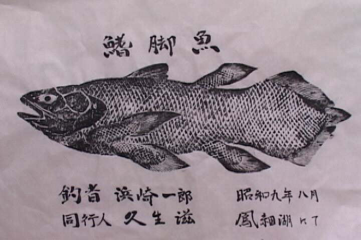
（小道具として作った魚拓）
本家、川口浩探検隊は「テレビの取材」という大義があったが、「チームウェンズデイ」は何のために探検に行くのか、動機の部分で疑問は湧いたが、今回は「深く追及しない」という案を採用した。
設定からすると、探検協会が誰かから依頼されたんだろう、と思って欲しい。主人公・川口浩は持ち前の使命感でもって困難に挑戦する。
具体的な撮影計画としては、一泊二日で河口湖周辺のロケ、つまり、樹海の森と洞窟の撮影で9割方を撮り終え、後日、地元の川原などで夜の焚き火シーンを追加撮影して終了と考えていた。
しかし、予定通りだったのは初日だけだった。夕方までに森のシーンを撮りながら樹海の中にある風穴の下見をした後、風穴の入り口のシーンまで撮り終え、撤収作業をしていると、粉雪が舞い始めたのだ。
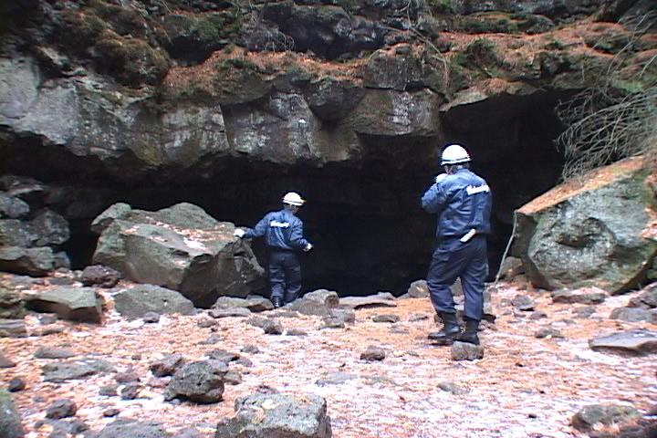
ジャンパーを着込んで歩き回っていたため、辛くは無かったのだが、改めて気温が下がっていることに気付いた。
「明日は洞窟の中の撮影だから、雨でも雪でも関係ないよ。初日に森の撮影が済んだから良かった」と言って、安心して河口湖の宿に入ったのだが、天候は見る間に悪化していった。
夜になっても雪は降り続け、粉雪はとっくにぼた雪に代わっていた。
翌朝、窓から外を見て目を疑った。一晩でこれほど積もるとは思ってもみなかったというほど、雪が深く積もっていたのだ。20
センチくらいは積もっている。宿の客も雪の話題で持ちきり。「何とか雪かきして表通りまでは出られる」とか、太い幹線道路に出るまでは、チェーンを巻いてない車は徐行するように、というような注意が飛びかっていた。
それでも私は、「まあ、洞窟に入ってしまえば外の雪は関係ないから」と楽観していた。
素泊まりだったので、宿を出るとコンビニで朝食と昼食を買い、昨日の撮影現場まで車で向かった。樹海の中を突っ切っている道路はそこそこ通行量もあるので、雪も融かされ、走行にそれほどの支障はない。しかし、一面の銀世界に変貌した樹海の隅に車を停めて、風穴に向かう者は他にいない。
機材一式を担いで森を歩く我々二人は、ブーツや紺のユニフォームも相まって、何となく消防隊員のように見えた。
森の中で雪が積もると、かえって見通しが良く、前日に下見した風穴の入り口までは苦も無く辿り着いた。遊歩道なので、足元もいい。しかし、その状態に絶句した。
「こりゃやばいな」
この風穴の入り口は、溶岩洞窟の恐らく大ホールになっていた部分が崩落して出来ている。だから、形状としては、平坦な森の中に突然、直径２、30
メートルの陥没地帯が現れる。周囲は高さ数メートルの絶壁だ。
本来は、ハシゴなどがないと降りられる高さではないが、何十年も前に作られた石段が一箇所ある。これは、昔、洞窟が養蚕事業に利用されていた頃のものだ。洞内には一年中氷があるので、カイコの卵を保管したりしていたらしいのだ。その頃の通路として崖に降り口が作られているのだ。
降り口といっても急な斜面に大雑把に作られた階段で、もともと上り下りするのに手を使わなければいけないほどの険しさだ。その石段が、昨夜の雪で、完全に覆われている。
なんとなく石段の形に見えるが、足を下ろす部分にちゃんと岩があるのか、空間に溜まった雪の吹き溜まりなのか、全く見分けがつかない。足を踏み外して落ちれば、下は固い溶岩だ。絶対に怪我をする。
「ダメだ。やめとこう」
ヨコタの即決である。
せっかくここまできたのだから、というような未練も湧かないほど危険な状態だったので、ヨコタの意見は逆にありがたかった。
風穴を後にした私たちは、しかし、帰途についたわけではなかった。補助的な映像として、近隣にある観光用の洞窟の中での撮影も、もともと予定していたからである。
幸い、雪のために閉鎖、ということもなく、数百円の入場料を払って洞窟に入ることが出来た。
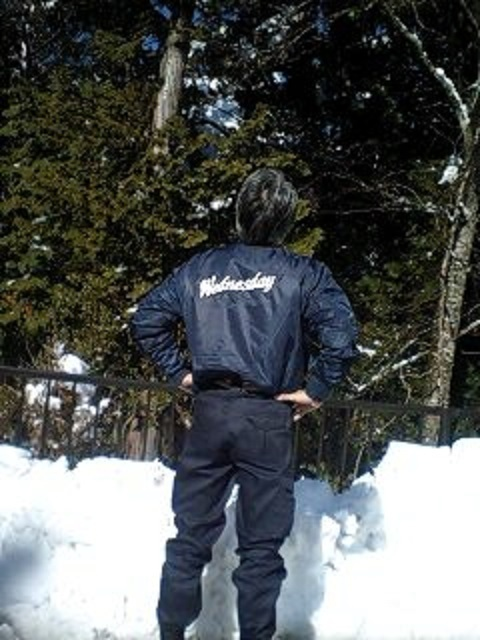
（観光洞窟の駐車場で）
樹海付近に点在する溶岩洞窟は、前述したように養蚕に利用されていた歴史がある。この洞窟も、看板や音声でずっと養蚕の歴史について解説している。
私とヨコタはせっかくのそういう教育的情報を無視して、ビデオカメラを構えつつウロウロと洞内の撮影をして回った。時々、家族づれやカップルの観光客が来ると、「こんにちは」「そこ、頭ぶつけないように気をつけてください」などと明るく挨拶して対応してごまかしていたから、まさかいい大人２人で探検ゴッコを撮影しているとは気付かれなかったはずだ。
本格的にヘッドライトを付けたヘルメットをかぶっていたこともあり、洞内の設備の点検でもしていると思われていただろう。
唯一の懸念は、洞窟を出た人が係員に「中で点検してますね」というような話をされることだ。設備に悪戯でもしていると思われたらまずい。事情を話せば問題にはならないとは思うが、「探検ゴッコを撮影してます」という説明はしたくない。できればこっそりと撮影を終了させたかったのだ。
観光用の洞窟は、ライトを持っていなくても歩けるようにたくさんの照明が点いている。厳密に言うと、洞窟探検シーンで、懐中電灯やヘッドランプ以外の光源があること自体おかしいのだが、リアルに徹すると、画面にはライトの明りしか映らない。観光用の照明は、低予算で洞窟探検シーンを撮影するのに非常に好都合なのだ。
できるだけ照明設備本体は映りこまないように、「カイコの一生」というような看板も写さないように注意しながら撮影を続ける。
「足元のここからは深い崖だと思って」
「もう、けっこう疲れてたほうがいいのか？」
完全に子供のゴッコ遊びと同じである。しかし、それを言ったら、プロの俳優も全ておお真面目にゴッコ遊びをして、大勢のスタッフでそれを形にするのだ。
我々がこの探検ゴッコを恥ずかしがるということは、彼らのことも馬鹿にする事になりはしまいか。
この洞窟撮影でも、出演者二人が代わる代わるカメラを持ってお互いを撮影したり、カメラを固定して、その前を横切ったりしながら撮影した。ここでの工夫の一つは、三脚を使わなかったことだ。
三脚はカメラを固定するのに必要な道具だが、安いものは、３本の足の長さを調整して、カメラの水平を保つ必要がある。
室内の撮影であれば、床は水平なので、三脚を移動させても水平が崩れることは無い。しかし、自然の起伏がある地面は基本的に水平ではない。
洞窟の中でも、カメラの位置と向きを決定して、三脚を調整しながらカメラを水平にして撮影するが、その位置を変えるたびに、「水平にする」という作業が発生するのだ。これが面倒で思いのほか時間が掛かる。
そこでかねてからのアイデアを試すために、三脚の代わりに蕎麦殻が入ったクッションを持っていったのだ。使い方は簡単。地面にクッションを置いて、その上にカメラを置く。高さは低いところからしか撮れない制約はあるが、細かな角度は自由に手早く調整できるのだ。
こういった秘密兵器を駆使しながら、洞窟内を這い回ったりという映像を一通り撮影して、一泊二日のロケを終えた。
中止になった風穴のホールでの撮影内容は、「洞窟内でシーラカンスを釣る」というシーンだった。これの代わりの撮影は、近所の自然公園で行なうことにした。
私の地元は横浜の外れなのだが、近隣には自然の雑木林などをそのまま活かした自然公園が多い。そのうちの一つに、高い石組みで周囲を囲った池があるので、その石組みを洞窟の壁に見立てて撮影しようという事になった。もちろん撮影は夜に行なう。
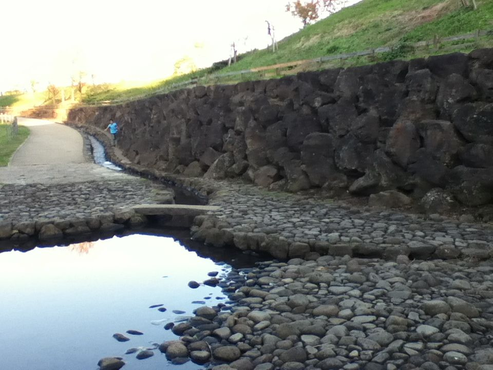
（公園の池と石段）
池は事故を防ぐために、元々、水深が３センチくらいしかない。夕方、撮影のために釣竿を持ってウロウロしていたら、遊んでいた子供に「魚なんかいないよ」と笑われた。
暗くなるのを待って、撮影を開始した。
公園の中には外灯もあるが、当然、撮影にとって都合のいい位置にあるわけも無く、撮影用のポータブルバッテリーを持っていく。昔の発電機の重さと騒音を経験していると、数キロの重量も何のことは無い。
このときはまだＬＥＤランプを使っておらず、消費電力の多いハロゲンランプを使っていた。そのため、撮影のためには数キロのバッテリーを予備として２つか３つ持っていくことになる。
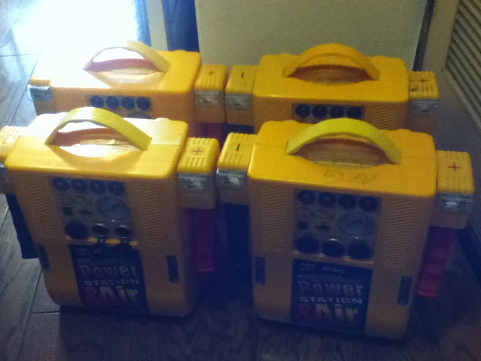
（ポータブルバッテリー）
例によってカメラマンはいないので、ユニフォームを着込み、ヘッドライトを付けたヘルメットをかぶった状態で、池の縁で撮影する。
カメラの角度によっては石組みであることがバレバレになってしまうので、できるだけ照明やカメラの角度を工夫して、石組みが崖の斜面に見えるように撮影する。
設定としては、探検隊が洞窟を奥へ奥へと進んできたら、行き止まりに地底湖が広がっている、という場面である。
水深３センチの池は冬の間は水が抜かれているので、あちこちに底が見えていて、カメラで撮影することはできない。隊員二人の「心の目」で水面を見渡しながら、その表情を撮影するのだ。
撮影状況はバカバカしいが、視線の先の映像は、岩手の鍾乳洞に行ったときのものを使っているので、編集した作品ではなかなかの迫力が出たと思う。是非、本編を観ていただきたい。
シーラカンスはルアーで釣ることにして、ヨコタが竿とリールをセットする様子を撮影する。イメージとしては、ロバート・ロドリゲス映画の中の、銃器の組み立てシーンのようなリズムで釣りの準備を表現したつもりだが、果たして観客にはどう見えるだろうか。
繰り返すが２人だけで撮影しているので、カメラを手持ちしている限り、被写体は完全に一人芝居になる。今回の場合、ルアーに掛かった獲物を竿さばきで釣り上げようとするヨコタの姿がそれだ。
本来であれば、一人が釣り糸の先を引っ張って、暴れる魚の動きを表現したいところだが、私はカメラを持っているので糸を引っ張れない。仕方ないので、糸の先は予備の重たい照明用のバッテリーに縛りつけ、ヨコタは釣り竿をしならせながら魚と格闘している様子を一人芝居する。
客観的には意味不明な行動だっただろうが、私は一所懸命カメラを覗いて、臨場感を表現しようと必死だったから、客観視できなかった。
釣りのシーンのほかは、また別の日、バーベキューが出来る川原に行き、暗くなってから焚き火を焚いてキャンプ地の撮影をした。
基本的にはこれで一通りの人物撮影を終え、後はブツ撮りだ。
科学番組風に、シーラカンスの剥製の映像を使いたくて、上野にある科学博物館に行って撮影もした。博物館では、剥製の他に、エレベーターホールに出来のいい金属製のシーラカンスの模型が展示してあり、それも撮影して使用している。
こう書くと、作品のためにわざわざ上野まで行ったように見えるが、元々、上野の博物館は、恐竜展などのイベントがあるたびに行っているので、博物館に行くきっかけに、シーラカンスの撮影を使った、とも言える。
郊外とはいえ、首都圏に住んでいるありがたさをつくづく感じる。
最後に登場するのは、シーラカンスのダミーだ。釣りのシーンでチラッと水中にシーラカンスを見せたかったので、そのダミーを製作した。ダミーといっても立体物ではなく、板にペンキでシーラカンスの絵を描き、切り抜いただけのものだ。
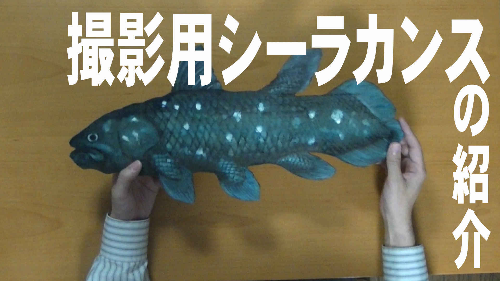
こういう時に、それなりの絵を手早く描けるというのは便利だ。私はプロの絵描きではないから、もちろん自己流の手法で「それらしく」描くことしか出来ないが、映画の小道具としてはこれくらいでちょうどいい。仮に、もっとレベルの高い絵を誰かが描いてくれるとしても、映像的には無駄になるので頼むことは無いと思う。
このシーラカンスのダミー看板を棒の先につけて、水中に沈めて撮影する、という手法は、あらかじめ決めていたのだが、いざ撮影しようとすると、適当な場所がなかなか見つからなかった。
水の透明度があり、さらに水面の波によって適度なゆがみや揺らぎがあってこそ、「本当は看板なのにそれらしく見える」のである。
近所の水場を中心にロケハンをして回ったが、撮影する足元から直接、ある程度の水深があって、なおかつ、水が澄んでいるという場所は、川、池では見つからない。地元の田んぼに水を引くための用水路はどうかと思い、夜に撮影機材を持って行って見たが、やはり水深が足りないのと、囲いが狭くて構図的にドアップしか撮れない。
とりあえず、出来るだけの映像を撮影したが、後でもっといいところで撮影した映像に差し替えなければ、という宿題は残した。
この「シーラカンス編」には、他にほとんど特撮用の小道具の類が登場しない。シーラカンスのダミー以外では、せいぜい樹海の中で出くわす「謎の石像」のミニチュアくらいだ。
これは、種を明かすと十円玉程度のサイズしかない。材料はフォルモ粘土という、１００円ショップにも売っているような素材だ。それにアクリル絵の具で色を塗って（と言っても黒一色だが）それらしく背景にデジタル合成している。
この、お手軽特撮が思いのほか上手くいったので、今後、これを多用した作品を作ることになる。本編では、それらしく見えているはずなので、是非、ご覧いただきたい。
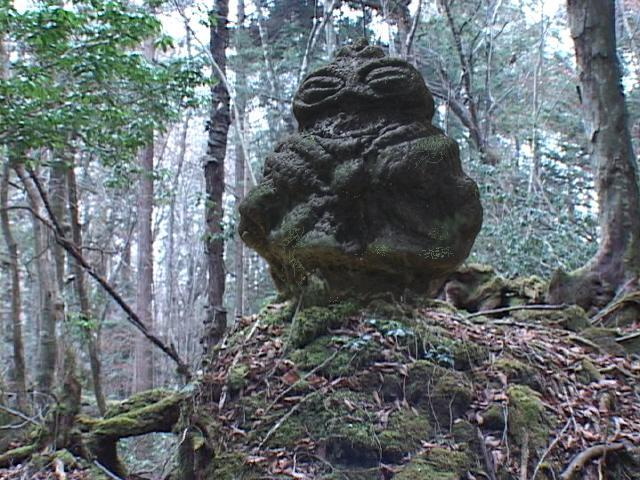
（合成後のミニチュア石像）
往年の「川口浩探検シリーズ」を楽しんだ方なら良く分かると思うが、この番組の影の主役は、田中信夫が担当するナレーションだ。
その仰々しい文体といい、重厚な口調といい、観ている者を引き込んだまま、時には膨大な薀蓄を強制的にインプットさせ、時には絶体絶命の危機感をあおる。
世の中には無数の「探検隊パロディー作品」が溢れている。しかし、プロアマ問わず、本家のナレーションの魅力を再現したものはほとんど無い。それは、ナレーション原稿が稚拙なことが主な原因だ。「アオリ」の部分を際立たせるためには、おとなしく解説する部分がしっかりしていなければいけない。
例えていえば、物凄いフォークボールで三振を連発するピッチャーだとしても、３球続けてフォークボールを投げていては通用しないのと同じだ。最後の決め球を有効に機能させるために、伏線となる投球の組み立てが不可欠だ。
多くのパロディーにはこの「組み立て」がない。それは、一瞬で笑いを取ることが目的なのだから仕方が無いし、有効な手ではある。
しかし、「単なるパロディー」ではなく、オリジナルへの尊敬や感謝の念がこもった「オマージュ」となると、バラエティーのパロディー的手法は使えない。
２０１６年は映画「シン・ゴジラ」の話題で持ちきりだったが、あれほどはっきりと「先人への尊敬と感謝」を具現化した作品も珍しい。
「ゴジラ第１作がどれほど凄い作品だったか」ということを、現代の手法で紹介するための作ったようにさえ思える。是非、「ゴジラ第１作」を合わせてご覧いただきたい。正しいオマージュの意味が分かるだろう。
話を「川口探検隊」のナレーションに戻すと、手前味噌だが、私は自分が大学生のときに作った長編作品「水曜スペシャル ＴＨＥ ＭＯＶＩＥ 水晶髑髏伝説」が一番のオマージュ作品だと思っている。
しかし、その私ですら、当時の実力や人脈からはナレーションの制作を断念した。原稿はともかく、生半可なナレーターでは、単なるパロディーになってしまうからだ。
当時はナレーションを入れないことで、単独の「探検映画」としてこの作品を製作したのだが、今回の「チームウェンズデイ探検シリーズ」では、念願だった本格ナレーションに挑戦してみようと思っていた。
原稿については、大雑把な映像の展開に合わせて、そのシーンで盛りこむべきことなどを考慮しながら、最終的に田中信夫ナレーションの形に文体を変換しようと考えていた。
しかし、原稿を書き始めて自分で驚いたのが、私の中に刷り込まれた「川口浩探検隊」である。書くべき原稿は、そのまま頭の中で田中信夫の声に変換され、当時の構成作家が書いた文体を再現しつつ、溢れてくるのだ。これは私個人の力ではなく、明らかに「川口浩探検隊」の怨念にも似たパワーだ。
結局、尺を合わせるための修正は繰り返したものの、元原稿は数日で完成した。
原稿が出来上がると、次の大きな問題はナレーターだ。理想は、若い頃の田中信夫。そんな逸材はそうそういるものではないが、実は私の近くに一人いたのである。
当時私は、サラリーマンとして働く傍ら、副業として舞台の撮影、編集を行なっていた。副業とは言うものの、金額は安い業者の半分以下だったので、小遣いの足しになった程度の収入だ。
その舞台の撮影をちょくちょくやらせていただいた中に、地元の小劇団があって、当時所属していた役者さんの声質に、田中信夫の片鱗を感じていたのである。
今回、ナレーションの構想が出たときは真っ先に、この役者さんに連絡をして、出演の約束を取り付けていた。ナレーションの仕事自体をされていたわけではないので、本業のナレーターのように淀みなく話し続ける、というほどの技量はないものの、こちらとしてはその声質があればＯＫなのだ。
録音はヨコタが使っているワゴン車。録音スタジオを時間で借りるより、時間にも縛られないし、一度試してみたいとは思っていた。車はある程度の防音が効いている上、仮に外の騒音が入るようであれば、静かな場所に移動できる利点もある。
車の中で、マイク関係の機材をセッティングして、週末の夜に神社の駐車場で録音を行なった。芝居と違って、練習を重ねた後の本番ではないので、役者さんも随分勝手が違ったとは思うが、言葉のリズム、音程、声質など、一言ごとに指示を出して修正しながら、ほぼ、理想的な状態のナレーション音源が手に入った。
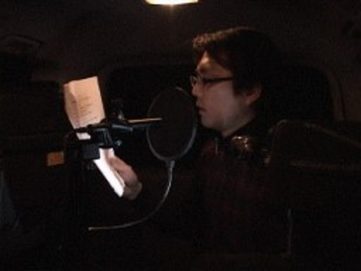
（車内での録音風景）
ナレーションの録音終わると、その音源に合わせて映像の調整などをしていった。全編、ナレーションがかぶっている探検シリーズの映像を編集したのは初めてだったが、最初の観客として楽しみながら編集できたと思う。
「これが、昔、一番初めに作ってみたいと思った探検映画なんだな」としみじみ思った。
ほぼ、編集が出来たころ、オリジナルのＢＧＭが上がってきた。これも、副業の舞台撮影で知り合ったミュージシャンの方にお願いしていたのだ。
この方は以前にも、オーディオドラマ用のＢＧＭを作って提供してくれていた。今では舞台音楽だけでなく、人気テレビドラマの音楽も手がけているような実力者だが、「川口浩探検隊のオマージュシリーズを作りたい」と相談したら、「馬鹿だなー！面白そうだなー！」といって、快く引き受けてくれていたのである。
納品後、「必要なら追加で作りますよ」と言ってくれたが、あらかじめ、場面ごとの雰囲気はオーダーしていたので、オープニングからエンディングまでばっちりのＢＧＭが揃った。
これは非常に贅沢なことなのである。
一般的には、著作権フリーの音源を使って作品を仕上げることがほとんどだろう。オリジナルの曲を作って使うにしても、なかなかこれほどのクオリティーのものは入手できない。そういう意味でも、人脈を作れた舞台撮影の副業は無駄ではなかったと確信している。
一旦、宿題にしていた、「泳ぐシーラカンス」のシーンだが、その後、伊豆に旅行に行く機会があったので、そのときに撮影した。もともと、旅行先では、夜、宿の近くの漁港で釣りをしたりすることが多いのだが、この時は釣りはせずに撮影をしたのだ。
横にパトカーから監視されつつの撮影であった。客観的には不審な行動以外の何者でもないから、監視は仕方ない。
自主映画の撮影を夜行なっていると、結構な割合で警官から声を掛けられる。ゴミの不法投棄をしていないか確認しているようだ。私は変にコソコソするのでなく、「ああ、何かの撮影をしているのか」と判りやすいように振舞っている。
その際も、「あ、パトカーだ」というリアクションをあえて見せてからにする。隠れて撮影するつもりはない、というアピールをするためだ。大抵は数分、様子を見た後でパトカーは走り去る。
伊豆で撮影しただけあって、水の透明度も申し分なく、理想的な映像に仕上がった。
さて、一通りのロケも終わり、ＢＧＭも被せた。微調整を繰り返しながら見直すのだが、気になったのは、出演者のセリフの少なさだった。
いかにもナレーションにおんぶに抱っこ状態で、カラオケのＢＧＶ状態に近く見える。
色々と検討した結果、ナレーションを一部削除して、その内容を、隊員二人の会話で表現することにした。
追加撮影である。
シーンとしては、キャンプ地で設営をしている最中に話をしている、というものなので、まあ、森の中がいいだろうということになった。まさかまた樹海に行くつもりも無く、近所にある自然公園の一つを訪れた。
ここは、雑木林を丸ごと含んだ公園で、実際には、子供たちの木登り遊具などがあちこちにあるのだが、出来るだけ手付かずの森に見える場所を選び、用意した簡単な絵コンテを元に、数カット分の撮影をした。
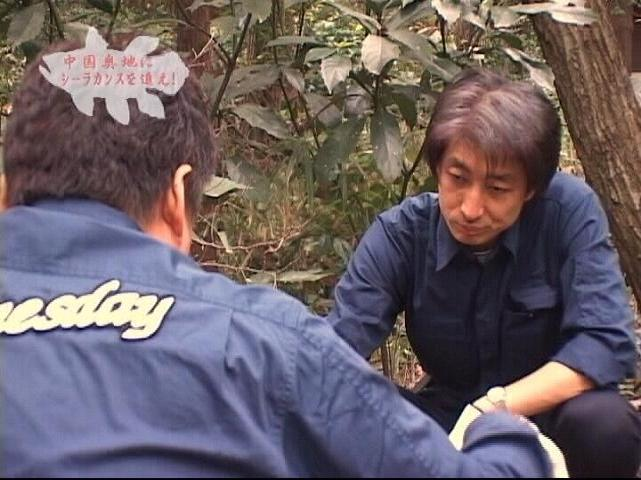
（森の追加撮影）
森のシーンを撮るために、わざわざ富士山の麓の樹海でのロケで始まったこの作品だが、追加撮影を地元の公園で手軽に行なったところ、映像的には悪くない出来であることが判明してしまい、「次回作は近場のロケでやってみようか」という気にさせた。
実際に、第２作では、森のシーンはほぼ全て、この自然公園で撮影を行なうことになったが、それはまた別の機会にお話したい。
こうして、原点回帰を目論んだ「チームウェンズデイ探検シリーズ第１弾」は完成した。
低予算自主映画ならではの欠点も当然あるものの、「本来は、映画作りは楽しいものだ」ということを再認識できた。
ここまで読んでくださったあなたも、機会があれば、是非、映画作りのような創作活動を楽しんでみていただきたいと思う。
既に、映像製作の経験がある方はもちろん、映像初心者の方も、新しい映像仲間として相談をお寄せいただきたい。創作に関する相談は歓迎します。
「チームウェンズデイ探検シリーズ第１弾」は升田企画から販売中のセットの一部ですが、第１弾の本編（旧バージョン）を、本書の特典として以下リンクから完全無料で全編をご覧いただけます。。
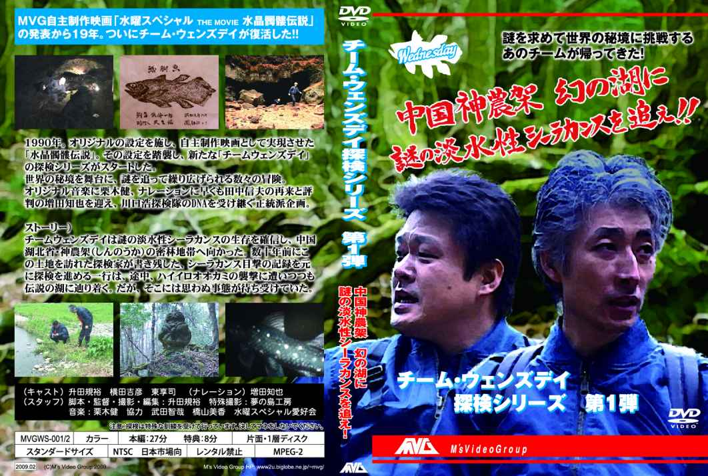
「チームウェンズデイ探検シリーズ第１弾」視聴リンクへ
私の運営するサイトＭＶＧ博物館 では、自主映画を中心に特撮や工作、創作物を展示しています。面白いことに興味がある方は是非、お越しください。
ご意見、ご感想をお寄せください。
升田規裕
masuda@masudakikaku.com
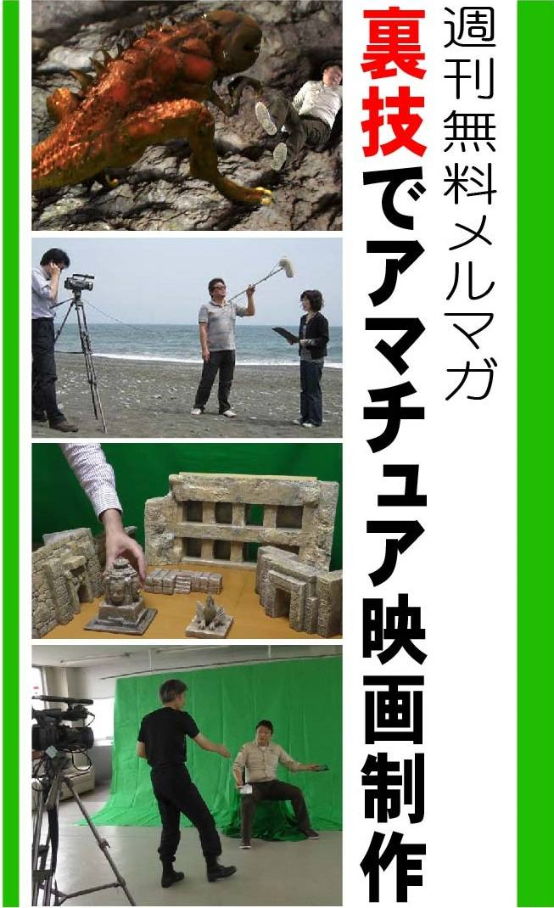
プロのマネをしたら映画は作れるでしょうか？無理です。それはアマチュアの方が低予算、少人数、短期間、撮影場所.etcの制約が圧倒的に多い（つまり忙しい）から。趣味の低予算映画作りには裏技が必要です。メルマガで映像化のための実践的手法をご提供します。
メルマガ読者限定のサービス等もあるので、左記フォームよりご登録ください。
無料メルマガ「裏技でアマチュア映画制作」
■電子書籍のご紹介（Kindle本は全てunlimited読み放題対象です）
■ＭＶＧ博物館のご案内
ＭＶＧ博物館
は、私の映画制作活動などを紹介しているサイトの名称です。
過去作品の動画や関連記事などもありますので、是非お越しください。
■ｆａｃｅｂｏｏｋページ「ＤＩＹ特撮映画倶楽部」のご紹介
情報交換の場として活用できればと思います。
興味のある方はお気軽に書き込んでください。
ＤＩＹ特撮映画倶楽部
ただ川口浩探検隊に憧れて
著者：升田規裕
編集・製作・発行元：升田企画
発行：第二版 ２０１７年10
月15
日
(C) Norihiro Masuda